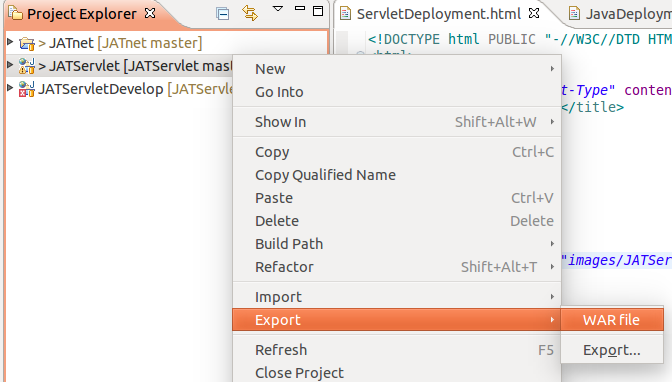
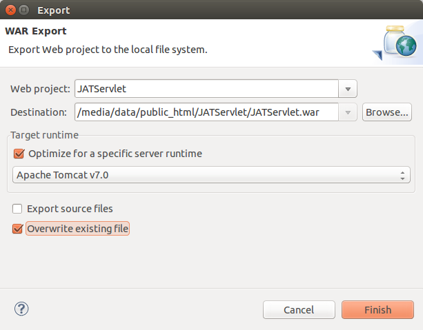

create the war file where you have write-permission
Then copy the war file to the Tomcat folder
sudo cp JATServlet.war /var/lib/tomcat7/webapps
sudo chmod 666 /var/lib/tomcat7/webapps/JATServlet.war
install vsftp on server
sudo apt get install vsftp
https://www.digitalocean.com/community/tutorials/how-to-set-up-vsftpd-on-ubuntu-12-04
on server, create directory named
/home/ftp
ftp 107.170.85.98
send JATServlet.war
/var/lib/tomcat7/webapps
chown webuser:webuser JATServlet.war
sudo service tomcat7 restart